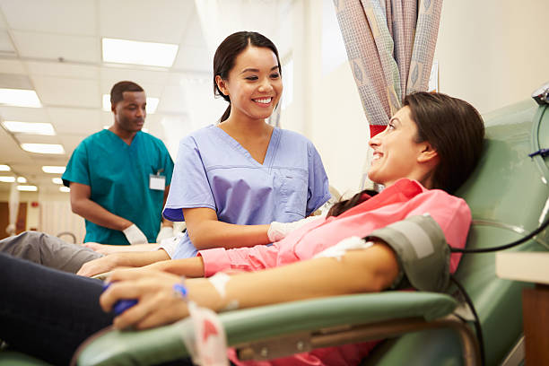

Objectives
Our main objective is to manage the details of Blood ,Donor,Blood Group,Blood Bank,Stock. We manage all the information about Blood , Blood Cell, Stock, Blood . The project is totally built at administrative end and thus only the administrator is guaranteed the access.
Provide Blood
Give blood and keep the world beating.

Trusthworth
Give blood and keep the world beating.

Purity
Give blood and keep the world beating.